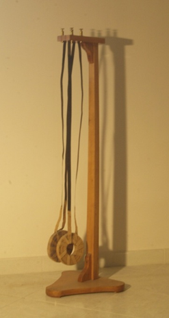

Apparecchio di Buff
Scuola di provenienza: Istituto Agrario "F. De Sanctis", Avellino
Settore: Elettrologia
Costruttori: Sconosciuto
Materiali: Legno, lamine metalliche
Accessori: Nessuno
Stato di conservazione: Buono a parte le tarme
Descrizione: L’apparecchio è costituito da due bobine a strisce fissate ad una sbarra mediante due strisce conduttrici. Esse possono essere disposte in circuito, tra loro vicinissime. Al passaggio di corrente ciascuna bobina può oscillare come un pendolo. Chiuso il circuito si nota la repulsione tra le due bobine. Se la repulsione non è evidente la si può amplificare “per risonanza” chiudendo e aprendo il circuito in accordo di frequenza con le oscillazioni che si vanno lentamente manifestando nelle due bobine.